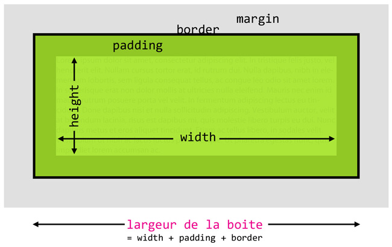

Les feuilles de styles
Dans les starting-blockQui suis-je ?
Je suis Thomas ZILLIOX, un web développeur freelance sur Lyon.
- Je suis spécialisé dans l'industrialisation du CSS :
Formation, conseil, mise en place d'outils, de bonnes pratiques, etc. ; - Je fais aussi du développement JS & PHP ;
- Je blog (rarement) sur mon site http://tzi.fr ;
- Je tweete (plus souvent) sur @iamtzi.
Vous pouvez voir cette présentation en ligne http://tzi.github.io/presentation-ModulesJavaScript.
1. Les éléments block
1.A. Le box-model
Source Vincent De Oliveira.
1.A. Le box-model
Ou pourquoi définir un width: 100%
est souvent une mauvaise idée.
1.A. Le box-model
Un box-model qui n'est pas du tout pratique pour la vie des projets.
1.A. Le box-model
La solution avec box-sizing
(support IE8+).
1.B. La largeur
Les éléments blocks s’empilent de haut en bas. On parle de flux vertical.
1.C. La hauteur
Avec la valeur par défaut, height: auto
, la hauteur d’un élément block s’adapte à son contenu.
1.A. Le box-model
Savez-vous ce que va afficher ce script ?